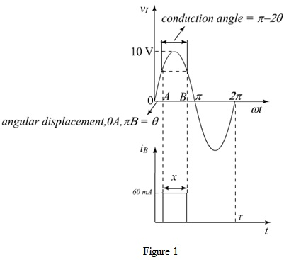

Step 1:
Sketch the input voltageand the battery current.

Step 2:
If the input voltage then the diode  conducts, whereas the diode
conducts, whereas the diode  is in cut off mode.
is in cut off mode.
The current flowing through the diode  is,
is,
.
When the input voltage,  then the diode
then the diode  conducts whereas the diode
conducts whereas the diode  is in cut off mode and thus the input voltage is cut off from the configuration. Therefore the entire current flows through the battery.
is in cut off mode and thus the input voltage is cut off from the configuration. Therefore the entire current flows through the battery.
Since the maximum amplitude of the sine wave is 10 V, the sine wave can be expressed as;

Since the battery voltage is 3 V, equate the input voltage to 3 V.
.
Substitute  for .
for .
Step 3:
Refer to Figure 1, the expression for the parameters and  is;
is;
.
One full wave lasts for duration.
The relation for the conduction angle is,
Obtain the fraction of the cycle, x.
Substitute for  .
.
Thus, the peak value of  is.
is.
Step 4:
Find the average of the current, .
Thus, the average value of the battery current is.
Step 5:
The input voltage is reduced by 10%, and the peak value of the current, remains the same,
Thus, the peak value of the battery current is.
Step 6:
Step 7:
Find the average current,.
Thus, the average value of the battery current is.